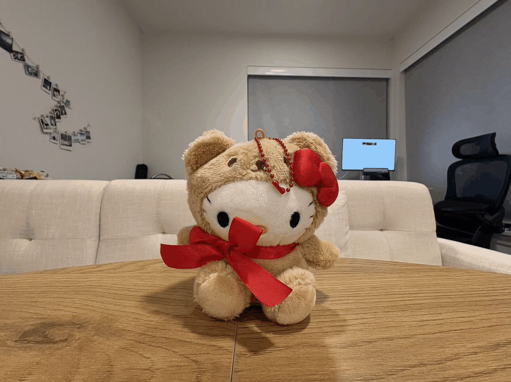

Project 00 / Camera geometry
Perspective & dolly zoom
I photographed close and distant views to study how camera position and focal length change apparent perspective, then assembled a dolly-zoom sequence.
- Compared facial distortion and architectural perspective across shooting distances.
- Kept a subject roughly fixed in frame while changing camera distance and zoom.
